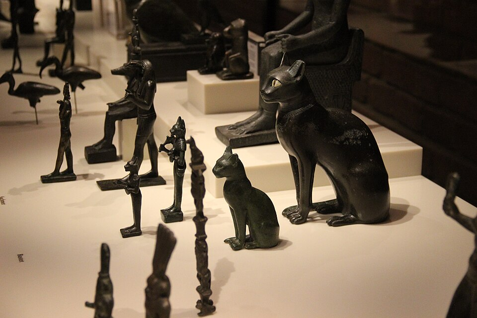

От амбара к очагу
Приручение кошки в Египте — история взаимной выгоды, а не приказа. Степная кошка пришла в неолитические деревни сама: за мышами, которых было некуда деть из амбаров с зерном. Кобра, тоже частая гостья житниц, делала союз ещё выгоднее. Египтяне не столько «взяли кошку в дом», сколько перестали гнать — а потом заметили, что зверь сам выбирает людей: спит у очага, встречает солнце, растит котят на коленях хозяйки.
К Среднему царству кошка — примета дома, а к Новому — член семьи и участник сцен роскоши: в гробнице Небамуна (~1400 до н. э.) знаменитые росписи с охотой на птиц и рыбалкой показывают рыжую кошку, которая ловит вылетевшую дичь — «как будто помогает хозяину». Кошка сидит под креслом госпожи на пирах, тянется к жаркому, украшена серьгой. Египтяне знали: эта охотница — и защитница зерна, и живое олицетворение Бастет; домашняя кошка была «её сестрой по образу», а возможно — и гостьей от неё.
Имя, золото, горе
Кошку в Египте так и звали: мау (mꜥw) — слово, почти совпадающее с «мяу»: иероглиф кошки детерминировал имена питомцев. Любимым давали и «человеческие» имена: Неферет («добрая»), Тами («кошка»), в новых египетских семьях — по цвету и характеру. Диодор Сицилийский (I в. до н. э.) отмечал: кошек украшают серьгами и ожерельями, «заботятся о них как о детях» — и, по его же свидетельству, убитая кошка поднимала целую деревню на месть.
Когда кошка умирала, Геродот зафиксировал обычай: домашние сбривают брови — публичный траур по питомцу. Покойницу мумифицировали: дома — в льняные пелены, побогаче — в мини-саркофаг с росписью и надписью «да будет она с Осирисом»; в некрополях Бубастиса и Бени-Хасана жрецы вели кошачьи похороны промышленного масштаба. В семейных гробницах встречаются именные стелы кошкам — редкий случай, когда домашнее животное получает адрес в вечности наравне с человеком.
Зачем кошку обожествили: практический ответ
Ни одно животное не было в Египте настолько «экономически незаменимым»: погребённое зерно — это могущество государства, мыши и крысы — угроза казне, кобра в детской — угроза дому. Сакрализация кошки — юридически закрепленная благодарность: за кошку платили жизнь (Диодор: казнь римского солдата, убившего кошку около 60 г. до н. э., — толпа не дала выдать её даже царской охране). Религия просто узаконила то, что делали амбары: кошка охраняла хлеб Египта — Египет охранил кошку в камне, бронзе и имени богини.